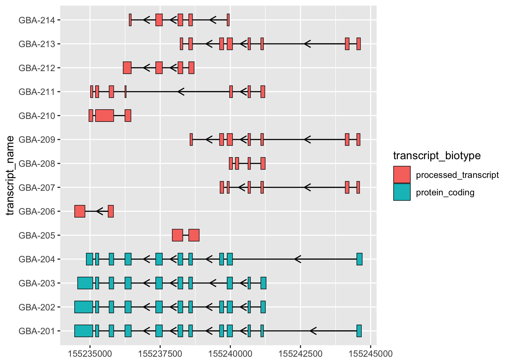
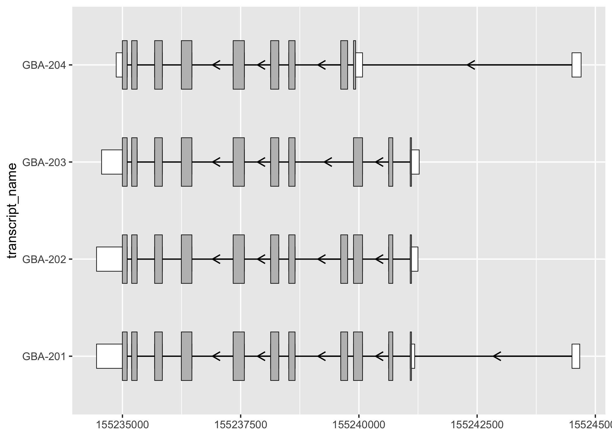
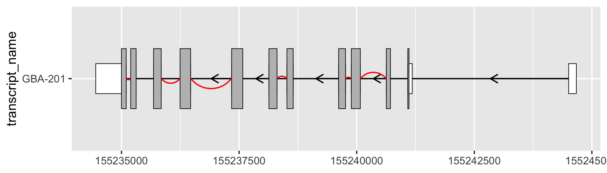

ggtranscript is a ggplot2 extension that makes it easy visualize transcript structure and annotation.
Installation
devtools::install_github("dzhang32/ggtranscript")Examples
ggtranscript introduces 3 new geoms designed to visualise transcript annotation; geom_range(), geom_intron() and geom_junction().
geom_range() and geom_intron() enable the plotting of exons and introns. ggtranscript also provides a useful helpful function to_intron to convert exon co-ordinates to the corresponding introns.
library(magrittr)
library(dplyr)
#>
#> Attaching package: 'dplyr'
#> The following objects are masked from 'package:stats':
#>
#> filter, lag
#> The following objects are masked from 'package:base':
#>
#> intersect, setdiff, setequal, union
library(ggplot2)
library(ggtranscript)
# gene annotation for the an example gene (GBA)
gba_ens_105 %>% head()
#> # A tibble: 6 × 8
#> seqnames start end strand type gene_name transcript_name transcript_biot…
#> <fct> <int> <int> <fct> <fct> <chr> <chr> <chr>
#> 1 1 1.55e8 1.55e8 - gene GBA <NA> <NA>
#> 2 1 1.55e8 1.55e8 - tran… GBA GBA-202 protein_coding
#> 3 1 1.55e8 1.55e8 - exon GBA GBA-202 protein_coding
#> 4 1 1.55e8 1.55e8 - CDS GBA GBA-202 protein_coding
#> 5 1 1.55e8 1.55e8 - star… GBA GBA-202 protein_coding
#> 6 1 1.55e8 1.55e8 - exon GBA GBA-202 protein_coding
# obtain exons
gba_ens_105_exons <- gba_ens_105 %>%
dplyr::filter(type == "exon")
gba_ens_105_exons %>%
ggplot(aes(
xstart = start,
xend = end,
y = transcript_name
)) +
geom_range(
aes(fill = transcript_biotype)
) +
geom_intron(
data = to_intron(gba_ens_105_exons, "transcript_name"),
aes(strand = strand),
arrow.min.intron.length = 500,
)
geom_range can be used for any genomic range based annotation. For example, when plotting protein-coding transcripts, it can be useful to visually distinguish the coding segments from UTRs.
# keeping only the exons from protein coding transcripts
gba_ens_105_exons_prot_cod <- gba_ens_105_exons %>%
dplyr::filter(transcript_biotype == "protein_coding")
# obtain cds
gba_ens_105_cds <- gba_ens_105 %>%
dplyr::filter(type == "CDS")
gba_ens_105_exons_prot_cod %>%
ggplot(aes(
xstart = start,
xend = end,
y = transcript_name
)) +
geom_range(
fill = "white",
height = 0.25
) +
geom_range(
data = gba_ens_105_cds
) +
geom_intron(
data = to_intron(gba_ens_105_exons_prot_cod, "transcript_name"),
aes(strand = strand),
arrow.min.intron.length = 500,
)
When working with short-read RNA-sequencing data, it can be useful to check whether a known transcript structure has junction support using geom_junction().
# using two transcripts as an example
gba_ens_105_201_exons <- gba_ens_105_exons %>%
dplyr::filter(transcript_name == c("GBA-201"))
gba_ens_105_201_cds <- gba_ens_105_cds %>%
dplyr::filter(transcript_name == "GBA-201")
# simulate junction data, randomly keeping half of the junctions
gba_ens_105_201_introns <- gba_ens_105_201_exons %>%
to_intron("transcript_name")
set.seed(32)
gba_ens_105_201_junctions <-
gba_ens_105_201_introns[sample(seq_len(nrow(gba_ens_105_201_introns)), 6), ]
gba_ens_105_201_exons %>%
ggplot(aes(
xstart = start,
xend = end,
y = transcript_name
)) +
geom_range(
fill = "white",
height = 0.25
) +
geom_range(
data = gba_ens_105_201_cds
) +
geom_intron(
data = gba_ens_105_201_introns,
aes(strand = strand),
arrow.min.intron.length = 500,
) +
geom_junction(
data = gba_ens_105_201_junctions,
colour = "red"
)
Code of Conduct
Please note that the ggtranscript project is released with a Contributor Code of Conduct. By contributing to this project, you agree to abide by its terms.
Development tools
- Continuous code testing is possible thanks to GitHub actions through usethis, remotes, and rcmdcheck customized to use Bioconductor’s docker containers and BiocCheck.
- Code coverage assessment is possible thanks to codecov and covr.
- The documentation website is automatically updated thanks to pkgdown.
- The code is styled automatically thanks to styler.
- The documentation is formatted thanks to devtools and roxygen2.
This package was developed using biocthis.